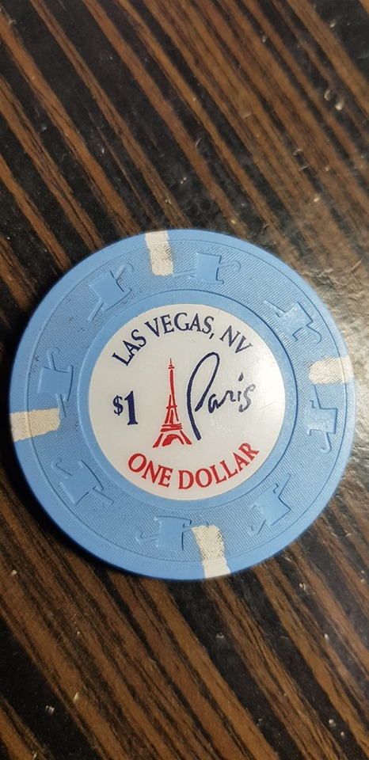
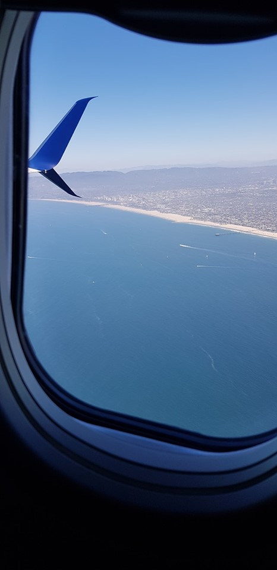

Tập VI
Sau hai ngày hai đêm khám phá một vài nơi ở Las Vegas, đến lúc phải chia tay nơi đây.

.Phải nói thiệt lòng đi du lịch tui ghét nhất ngày Check out khách sạn, vì sao các bạn và quý vị có biết không?, ngày cuối ở khách sạn khi mình trả phòng vào khoảng mười một giờ trưa, có điều chín mười giờ mình phải thu dọn hành lý đâu vào đó hết rồi, nếu ra xe đi đến địa điểm mới trong tour của mình liền thì không có điều gì phàn nàn, đàng này chuyến bay trở lại Los Angeles của tụi tui sẽ Check in gần sáu giờ chiều, mà khi trả khách sạn rồi thì đi lòng vòng "cù bơ cù bất" ngoài phố, hoặc vô nhà hàng, quán tiệm cà phê nào đó "Đóng đô" tạm thời, khoảng thời gian chờ đợi này tâm lý tui như những người Homeless (Vô gia cư), nó thật chán chường vì thời gian nó dài lê thê, cũng may phước là các khách sạn họ có dành một cái phòng để cho khách gửi hành lý lại trong khi chờ đến giờ mình khởi hành thực thụ (Dịch vụ này hoàn toàn miễn phí), nếu không có dịch vụ như vậy thì kéo vali kè kè bên mình thật là bất tiện phải không các bạn ( nếu kéo vali lòng lòng kiểu đó thiên hạ thấy vậy có khi họ lầm thầm với nhau:
- Cha nội này chắc mới bị vợ đuổi khỏi nhà hay sao á.)
 .
.
Trong khi chờ đợi đón Taxi vô phi trường Las Vegas, cả đám tụi tui tranh thủ chụp thêm một số hình ảnh cho cả đoàn và cho từng người, như tui đã nói thời tiết Las Vegas mùa hè thật khắc nghiệt, ngoài trời hôm ấy hơn bốn mươi độ (C), nắng chang chang, bầu trời xanh thẳm trong veo không một gợn mây, vậy mà mấy cô nàng trong đoàn tui ra đứng làm dáng để chụp ảnh, thấy vậy tui bèn ghẹo mấy cháu:
- Tao thấy mấy đứa ngộ thiệt nha, ở bên nhà mỗi lần có chuyện phải ra đường, đứa nào cũng bịt người kín mít như "Ninja" vậy mà qua đây nắng thấy tía luôn mà không chịu chụp lia lịa rồi vô mát, giang nắng một hồi tụi bây đen như "Chà và ma ní" hết ráo cho coi.
Mấy nhỏ nghe tui nhắc vậy cũng không thèm đếm xỉa gì đến, đã vậy tụi nó còn nhắc người cầm máy chụp hình:
- Nè Tùng nè, ông chụp có tâm giùm một chút nghe (ý nói chụp kỹ lưỡng giùm).
Trời đang nóng dữ dội, nghe mấy cô nàng nhắc nhở mình như vậy, trong bụng chắc không vui nhưng Tùng nhà ta bấm máy thiệt là có tâm, nhờ đủ ánh sáng, nhờ ăn mặc chải chuốt nhờ tâm lý thoải mái sau khi đi Shopping cả ngày hôm qua, vì vậy những tấm hình do Tùng chụp đẹp vô cùng, thấy vậy tui ghẹo:
- Chuyến này về Sài gòn mở tiệm chụp hình kiếm tiền uống cà phê được đó con.
Cả đám cười lên vui vẻ trong cái nóng thấy mồ tổ của vùng Las Vegas.
Xe đưa ra đến Phi trường Las Vegas, sau khi ký gửi hành lý xong xuôi thì đến màn qua kiểm tra an ninh, thú thiệt đi chơi thì vui nhưng đến mấy đoạn này tui không khoái chút nào, như đã nói phần trên, thôi kệ để an toàn chung trên các chuyến bay thì mọi người cũng nên gác lại những phiền muộn này nhé.
Tui cầm Passport và vé máy bay trao cho cô nhân viên an ninh trẻ và rất đẹp, không biết tui có bị ông ứng bà hành gì đó, tui thì tiếng anh lại "quá giỏi" mà hôm ấy dám cả gan khen nịnh cô ta:
- Police beautiful
(Ý tui khen cô ta đẹp, không biết tui nói vậy có trúng hay không mà tui thấy cô ta cười rạng rỡ)
Cô cảnh sát trả lại giấy tờ cho tui rồi ra dấu tui có thể di chuyển tiếp vào trong để đi qua máy chiếu quang tuyến X, đồ đạc trong ba lô, bóp, dây nịch, mắt kiếng, đồng hồ, cà rá nói chung tui dọng hết ráo vô mấy cái khay đang chạy trên băng chuyền để qua máy chiếu, tui đi qua máy xong thì một anh cảnh sát khá đẹp trai phong cánh đúng là cảnh sát Mỹ, với gương mặt thật ngầu, anh ta nói cái gì đó tui không hiểu, nhưng may cái là anh dùng động từ "To quơ" nên tui hiểu là anh kêu tui giơ cao tay lên để anh khám xét, anh ta mò khắp người tui, mò trong lưng quần, mò luôn bắp vế nữa, tui thắc mắc tự hỏi:
- Mình đi qua máy quang tuyến X rồi, mắc mớ gì mà ổng rà mình dữ vậy cà.
Chừng như khám phá ra gì đó, anh ta sổ tràng tiếng anh, tui nghe như "Vịt nghe sấm", nhưng vốn cũng nhạy bén, tui bèn đón mò chắc nó hỏi mình còn cái gì trong người không, tui vội mò cái túi quần lấy ra 1 dollars ( Tiền dùng trong sòng bài) và tờ một trăm dollars trong túi đưa ra trình diện anh ta, tui đưa cho anh ta xem, lúc này anh ta mĩm cười lạ lắm làm tui thắc mắc nữa:
(Cái thằng này ngộ nha, nãy làm mặt "hình sự" với mình giờ lại cười thấy vui vui, chết tía rồi khi không mình móc trăm dollars đưa cho anh ta có khi nào anh ta nghĩ mình có mờ ám gì đó mà toan hối lộ cho anh ta hay không, kiểu này bất đồng ngôn ngữ nó hốt tui vô "hộp" có nước ''Húp cháo rùa" luôn).
Vẫn với nụ cười thân thiện, anh ta lấy tờ giấy để thử ma túy quẹt vô lưng bàn tay của tui, chẳng thấy phản ứng hóa học nào xảy ra dương tính với ma túy, chưa tin lắm anh ta bắt tui xắn tay áo lên anh ta quẹt quẹt thêm vài lần nữa, rốt cuộc tui không có "bà con" với "nàng tiên nâu, hoặc chất bột trắng trắng ghê rợn" anh đành cho tui đi lại băng chuyền để nhận hành lý, tưởng vậy là qua khỏi kiếp nạn, nhưng không, Đường Tam Tạng thỉnh kinh đến đoạn cuối cũng còn "mắc cái eo" mới đem kinh sách về tới Đại Đường, tui thầm nghĩ chắc mình đang vô vai Tam Tạng thỉnh kinh phiên bản năm hai không một chín, kiếp nạn cuối cùng đây rồi.
Hai cái ba lô của tui và "Chú Bảo" thằng cháu ngoại của mình đang nằm chần giần trước mặt cô nhân viên an ninh xinh đẹp (lại cũng xinh đẹp), cô ta hỏi đây có phải là ba lô tui và thằng cháu ngoại hay không, tui nhanh chống gật đầu xác nhận, cô ta mới bắt đầu đỗ toàn bộ đồ đạc trong ba lô ra để kiểm tra, nào là mấy gói trà của Tu Pham tặng hôm gặp nhau ở Cali, rồi cà phê gói hòa tan tui đem theo để uống, (Tui thủ cẳng khá nhiều cà phê này, phòng khi cà phê ở Mỹ không hợp gu thì có cái để uống, bằng không tới cử mà không có cà phê thì không tỉnh táo đầu óc), thấy mấy gói cà phê lẻ tẻ này cô ta cầm lên quan sát, nhưng khi cô nhận biết đây là cà phê chánh gốc Việt nam cô cười cười bỏ lại ba lô cho tui, sau một hồi lục soát, không có vật gì liên quan đến chất cấm, cô ta vui vẻ trao cái ba lô cho tui cô ta nói lời cảm ơn vì tui hợp tác trong khi cô làm nhiệm vụ, tui mừng vui và lên tiếng cảm ơn cô ta rồi mang ba lô rời khỏi nơi kiếp nạn sau cùng này.
Ra ngoài tui thấy toàn bộ người trong đoàn đang đứng chờ tui với "Chú Bảo", nhỏ con lên tiếng hỏi:
- Tía mang theo cái gì mà bị xét lâu dữ thần vậy.
- Ờ thì ba cái gói cà phê thôi mà, qua Mỹ tía sợ cà phê không hợp gu nên đem theo.
Con nhỏ cằn nhằn ông già tía:
- Chèn ơi! Qua Mỹ mà tía sợ không có cà phê ngon, thôi ngày mai tranh thủ uống đi, còn nhiêu để lại, đừng mang theo kè kè nữa, họ tưởng Heroin ngụy trang xét tới lui phiền phức lắm.
Nghe con nói cũng phải, tui ráng tranh thủ uống lia lịa cho tới ngày về cũng hết cái đám cà phê mắc dịch này.
Chừng khi bình tĩnh lại tui tự hỏi tại sao mình với thằng Bảo bị xét dữ thần ôn vậy, như cuốn phim chiếu chậm lại tui nghiệm ra hai "lỗi lầm" không nên có khi đi qua nơi xét hành lý.
Một là tui nói lời khen không đúng lúc đối với cô an ninh, vì có thể cô ta cho tui dùng lời nói khen nọ để đánh lạc hướng cô khi đang làm nhiệm vụ kiểm tra giấy tờ của tui
Hai là trước khi vô gặp cô gái nọ để xem giấy tờ, tui và "Chú Bảo" phạm phải sai lầm, vì Bảo nhờ tui lấy ipad trong ba lô cháu đang mang trên lưng để bỏ ra khay riêng, tui với cháu lọng cọng khi lấy đồ ra vô nên anh nhân viên kia đã quan sát tụi tui từ xa khiến anh nghi ngờ, hoặc do cô an ninh gọi máy vô yêu cầu anh ta xét tụi tui vì có hành động đánh lạc hướng cô ta qua lời khen lúc ban đầu.
Qua vụ này tui không bao giờ để nó xảy ra lần nữa, ớn chè đậu lắm rồi.
Đáp xuống Phi trường Los quen thuộc, (sở dĩ tui nói quen thuộc vì mấy ngày trước cứ đi đâu đều phải qua phi trường này riết rồi muốn thuộc bài luôn), cháu Ngọc Anh con của Mợ Dung rước tụi tui về nhà cháu cách phi trường gần hai tiếng lái xe, còn năm thành viên trong đoàn bắt chuyến bay về Đài Bắc và nối chuyến quay về Việt Nam, riêng ba cha con ông cháu tui còn rong ruổi một thời gian ở Mỹ nữa mới quay lại cố hương.
Buổi sáng ở nhà mợ Dung được ăn sáng cũng rất ngon, tội nghiệp mợ và vợ chồng cháu Ngọc Anh đã tiếp đãi thật nồng hậu, hai cháu nhỏ con của vợ chồng cháu Ngọc Anh thật dễ thương, hai cháu làm trò, quấn quít bên tụi tui như thân tình tự bao giờ, các cháu giao tiếp rất tự nhiên không nhút nhát như con nít bên mình gặp người lạ thì e thẹn ngại ngùng, cảm động nhất khi vợ chồng Ngọc Anh chở tụi tui ra phi trường Los Angeles để đi Seattle lên thăm ngôi trường hight School nơi "Chú Bảo" sẽ du học tại đây, trên xe nghe tiếng phone của mợ Dung nói:
- Hai đứa nhỏ khóc quá chừng bây ơi, nó vừa thức dậy thấy không có ai ở nhà hai đứa khóc rân trời luôn.
Vậy đó, khi nghe mợ Dung thông báo tình hình như vậy, tự dưng tôi thấy nghèn nghẹn trong cổ họng và ươn ướt dưới đuôi mắt mình.
Lại một lần nữa tạm biệt phi trường Los Angeles, hảng American đưa tụi tui đến vùng đất Seattle xinh đẹp vô cùng...

.Saigon 17.7.2019 (19:20)